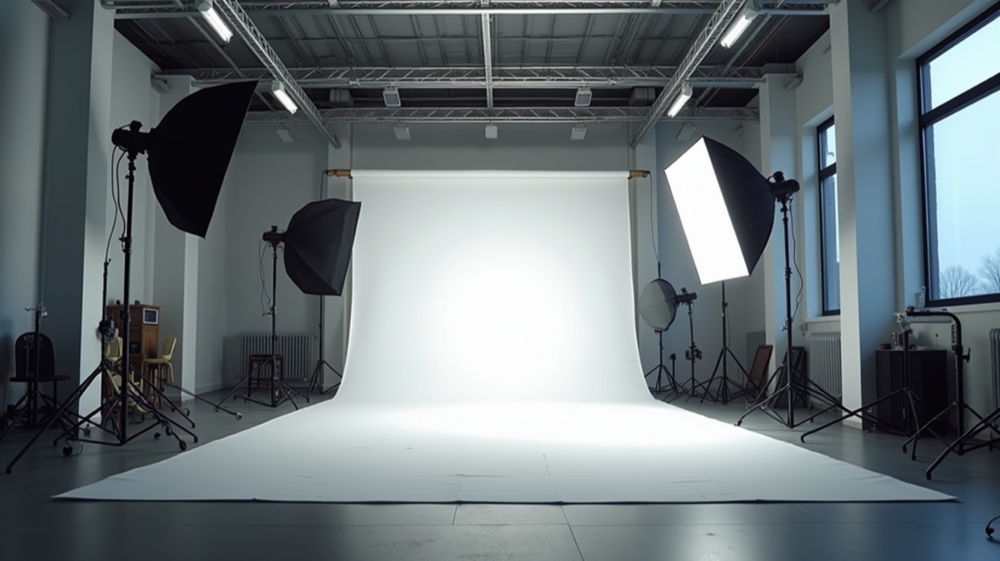
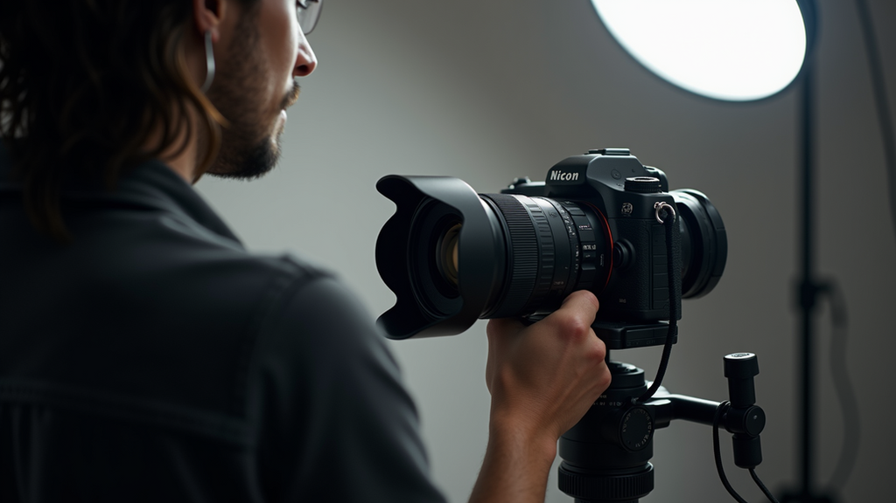

Key Features of an Excellent Photo Studio: What Sets It Apart
When I first started exploring photography professionally, I quickly realized that the environment where you shoot can make or break your work. A photo studio is more than just a room with a camera and lights.
When I first started exploring photography professionally, I quickly realized that the environment where you shoot can make or break your work. A photo studio is more than just a room with a camera and lights. It’s a creative space designed to bring your vision to life with precision and style. Over time, I’ve learned what truly makes a photo studio excellent, and I’m excited to share these insights with you.
Essential Photo Studio Features That Elevate Your Work
An excellent photo studio combines functionality, comfort, and technology to create the perfect setting for any shoot. Here are some key features I always look for:
- Spacious Layout: Ample room allows for flexibility in setting up different scenes and lighting arrangements. It also makes it easier to move around without disturbing the setup.
- Professional Lighting Equipment: Quality lighting is non-negotiable. A mix of softboxes, reflectors, and adjustable LED panels helps control shadows and highlights perfectly.
- Versatile Backdrops: Having a variety of backdrops, from seamless paper to textured fabrics, lets you tailor the mood and style of your photos.
- Climate Control: Comfort matters. A studio with good ventilation and temperature control keeps everyone relaxed during long sessions.
- Power Outlets and Cable Management: Multiple outlets and organized cable routing prevent hazards and keep the space tidy.
- Storage Solutions: Easy access to props, lenses, and accessories speeds up workflow and keeps the studio clutter-free.
These features are the foundation of a studio that supports creativity and professionalism. When these elements come together, the results speak for themselves.

How Lighting and Space Impact Your Photography
Lighting is the heart of photography. Without it, even the best camera can’t capture the magic. In an excellent photo studio, lighting options are diverse and adjustable. I always recommend studios that offer:
- Continuous Lighting: Great for video and stills, continuous lights let you see exactly how shadows fall in real time.
- Strobe Lights: These powerful flashes freeze motion and create dramatic effects.
- Modifiers: Softboxes, umbrellas, and grids help shape light to suit your subject.
Space complements lighting by giving you room to experiment. For example, shooting portraits requires different distances and angles than product photography. A studio with a high ceiling and open floor plan allows you to position lights and subjects without constraints.
If you’re serious about your craft, investing time in finding a studio with excellent lighting and space will pay off in the quality of your images.
The Importance of Equipment and Technology in a Photo Studio
Modern photography relies heavily on technology. An excellent photo studio keeps up with the latest gear and tools to streamline the creative process. Here’s what I consider essential:
- High-Quality Cameras and Lenses: While you might bring your own, a studio that offers professional-grade equipment can be a huge advantage.
- Tethering Stations: Connecting your camera to a computer lets you review shots instantly on a large screen, making adjustments easier.
- Editing Software Access: Some studios provide on-site editing suites, which is a bonus for quick turnarounds.
- Reliable Internet Connection: For remote collaborations or live streaming, a strong internet connection is crucial.
Having these technologies at your fingertips means you can focus on creativity without worrying about technical hiccups.

Why Comfort and Ambiance Matter in a Photo Studio
A photo shoot can last hours, so comfort is key. An excellent studio pays attention to ambiance and amenities that keep everyone at ease. Here’s what I look for:
- Comfortable Seating: For clients and crew during breaks.
- Natural Light Options: Even if artificial lighting is primary, natural light can add warmth and variety.
- Refreshment Area: A small space for drinks and snacks helps maintain energy.
- Soundproofing: Reduces outside noise, creating a calm environment.
- Clean and Inviting Decor: A tidy, well-decorated space inspires creativity and professionalism.
When the studio feels welcoming, clients relax, and the creative flow improves. This is especially important for portrait and fashion shoots where mood impacts the final image.
How to Choose the Right Photo Studio for Your Needs
Selecting the perfect studio depends on your specific goals and style. Here are some tips I’ve found useful:
- Define Your Requirements: Are you shooting products, portraits, or large groups? Different shoots need different spaces.
- Visit Multiple Studios: Pictures online don’t always tell the full story. Seeing the space in person helps you assess lighting, size, and vibe.
- Ask About Equipment and Services: Some studios offer rental gear, assistants, or post-production help.
- Consider Location and Accessibility: A studio that’s easy to reach saves time and stress.
- Check Reviews and Testimonials: Hearing from other photographers can reveal hidden pros and cons.
Remember, the right studio supports your creative vision and makes your workflow smoother. Don’t rush this decision.
Creating Stunning Images Starts with the Right Studio
Choosing a photo studio with the right features is a game-changer. It’s not just about having a camera and lights; it’s about the entire environment that nurtures creativity and professionalism. From spacious layouts and versatile lighting to comfort and cutting-edge technology, every detail counts.
If you want to elevate your photography, start by finding a studio that meets these key criteria. You’ll notice the difference in your work and the experience you provide to your clients.
For more tips on photography and studio setups, feel free to explore this resource.
I hope these insights help you find or create a photo studio that truly supports your artistic journey. Remember, the best studio is one that feels like a creative home where your ideas come to life effortlessly.
More articles
Studio Experience and Client Confidence
An excellent photo studio also affects how clients feel during the session. A controlled, private space helps people relax, try different expressions, change outfits, and review images without distraction. For headshots and portraits, that comfort can make a visible difference in the final result. Good studios are not only about equipment; they are about creating a process where lighting, posing, wardrobe, makeup, tethered review, and retouching decisions can happen with intention. When the studio workflow is organized, clients leave with stronger options and a clearer understanding of how the final images will be used.
What Makes a Photo Studio Useful for Professional Work
A strong photo studio is more than a room with lights. It is a controlled environment where the photographer can shape expression, color, shadow, background, wardrobe, and pacing without fighting the unpredictability of a public location. For headshots, portraits, products, food, and brand campaigns, that control gives the final images a cleaner and more consistent feel. Clients also benefit from privacy, repeatability, and a more focused experience during the session.
The most important studio features are practical: enough space to separate subject from background, reliable lighting modifiers, clean backgrounds, comfortable preparation areas, tethered capture, color-managed review, and room to adjust wardrobe or styling. Those details make the shoot more efficient and give clients confidence as they see the images take shape. For team headshots, studio consistency can be especially valuable because every person receives the same quality of light and composition even if they are photographed at different times.
A good studio also supports direction. Many clients are not used to being photographed, so the environment needs to feel calm and professional. The photographer should guide posture, expression, hand placement, and small adjustments without making the process feel stiff. When the technical setup is solid, the client can focus on presence instead of mechanics. That is what makes a studio session feel polished, personal, and useful long after the shoot is over.
How to Get More Value From the Session
The most useful photography projects are planned with final placement in mind. Before booking, list the places where the images will appear: website hero sections, service pages, LinkedIn, Google Business Profile, proposals, press releases, casting submissions, printed ads, menus, or social campaigns. That simple step changes how the session should be photographed. Horizontal frames need room for headlines, vertical frames need clean subject placement for mobile, and square crops need enough breathing room to avoid cutting into the subject. When those deliverables are considered before the shoot, the final gallery gives you stronger options and reduces the need for last-minute compromises.
It also helps to think about consistency across the full brand. Color, contrast, background, wardrobe, styling, retouching, and file naming all affect how professional the final images feel once they are published. For businesses, that consistency can make a website, team page, restaurant menu, architecture portfolio, or campaign deck feel more established. For individuals, it can make a headshot, biography, speaking profile, and social presence feel aligned. The goal is to create photographs that look beautiful on their own and still work hard in the real places clients need to use them.